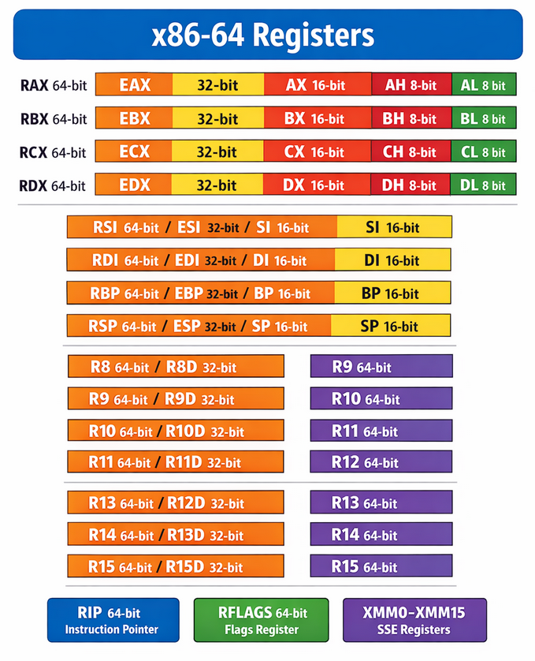

-
ISA is the formal contract between software and a CPU.
-
It defines:
-
available instructions (ADD, MOV, etc.)
-
registers and their roles
-
memory addressing modes
-
binary encoding of instructions
-
calling conventions (partially)
-
privilege levels
-
-
It does not define:
-
pipeline depth
-
cache sizes
-
branch predictor
-
microarchitecture details
-
-
ISA = what the CPU promises
-
Microarchitecture = how the CPU delivers
-
Two CPUs can implement the same ISA and run the same binaries while having completely different internal designs.
x86-64
Intel Syntax
-
Demonstrates: register moves, system call.
; Linux x86-64: exit(0)
section .text
global _start
_start:
mov rax, 60 ; syscall: exit
mov rdi, 0 ; status
syscall
-
Key traits
-
CISC
-
variable-length instructions
-
many addressing modes
-
AT&T syntax
-
Same behavior, different syntax.
.globl _start
.text
_start:
mov $60, %rax
mov $0, %rdi
syscall
-
Notable differences
-
source, destination order reversed
-
registers prefixed with %
-
immediates prefixed with $
-
These are syntactic differences only — same machine code.
-
Registers
-
Image from ChatGPT:
-

-
General Purpose
-
x86-64 has 16 GPRs total:
RAX–R15.
| Name | Purpose / Notes | Sub-registers |
| ---------- | ---------------------------------------------------- | ------------------------------------------------------------- |
|RAX| Accumulator, often used for return values |EAX(32-bit),AX(16-bit),AH/AL(8-bit high/low) |
|RBX| Base register, often preserved across calls |EBX,BX,BH/BL|
|RCX| Counter register, used for loops, shifts |ECX,CX,CH/CL|
|RDX| Data register, used for I/O, multiplication/division |EDX,DX,DH/DL|
|RSI| Source index, string/array operations |ESI,SI|
|RDI| Destination index, string/array operations |EDI,DI|
|RBP| Base pointer / frame pointer |EBP,BP|
|RSP| Stack pointer |ESP,SP|
|R8–R15| Additional GPRs introduced in x86-64 | Each has 32-bit and 16-bit halves (R8D,R8W,R8B, etc.) |
Instruction Pointer
| Register | Purpose |
| -------- | ----------------------------------------- |
|
RIP
| Holds the address of the next instruction |
Segment Registers
-
Used for addressing and legacy protection; mostly less relevant in 64-bit mode.
| Name | Purpose |
| ---- | ----------------------------------- |
|CS| Code segment |
|DS| Data segment |
|SS| Stack segment |
|ES| Extra segment |
|FS| Often used for thread-local storage |
|GS| Often used for thread-local storage |
Flags / Status Register
-
These are used by the CPU to track the outcome of arithmetic and control instructions.
| Register | Purpose |
| -------- | ------------------------------------------------------------------- |
|RFLAGS| Condition codes and control flags:CF,PF,AF,ZF,SF,OF,DF, etc. |
SIMD / Floating-Point / Vector Registers
-
XMM(128-bit) – SSE instructions-
XMM0–XMM15(16 registers) -
Used for floating-point, vector, and integer SIMD operations
-
-
YMM(256-bit) – AVX-
YMM0–YMM15(extends XMM registers)
-
-
ZMM(512-bit) – AVX-512-
ZMM0–ZMM31(depends on CPU support) -
Extends
YMMregisters further
-
Floating-Point Stack Registers (x87 FPU)
-
These are mostly legacy but still supported.
| Name | Purpose |
| --------------- | ------------------------------- |
|ST(0)–ST(7)| 8-register floating-point stack |
Control Registers (CR0–CR4, CR8)
-
Used for CPU mode control and memory management.
| Register | Purpose |
| -------- | --------------------------------------------- |
|CR0| Control flags (e.g., enabling protected mode) |
|CR2| Faulting address (page fault) |
|CR3| Page table base |
|CR4| Extended features |
|CR8| Task-priority register (x86-64 only) |
Debug Registers (DR0–DR7)
-
Used for hardware breakpoints and debugging
-
Mostly controlled by OS/debugger
Model-Specific Registers (MSRs)
-
CPU-specific, control advanced features like performance counters, system configuration, virtualization.
-
Accessed via
RDMSR/WRMSRinstructions.
Windows x64 ABI
Shadow Space, Alignment, Extras
-
Before any call, stack must be 16-byte aligned
-
32 bytes shadow space (mandatory in Windows ABI)
-
16-byte alignment requirement
-
Extra space for stack arguments
sub rsp, 56
Function Arguments
-
The first 4 integer/pointer arguments go into:
| Argument index | Register |
| -------------- | -------- |
| 1st |rcx|
| 2nd |rdx|
| 3rd |r8|
| 4th |r9| -
Tt’s mandated by the ABI so that compiled C/C++ and assembly interoperate.
-
Using anything else would pass wrong arguments.
-
Example:
; InitWindow(int width, int height, const char *title) mov ecx, [SCREEN_WIDTH] ; ECX is a sub-register from RCX mov edx, [SCREEN_HEIGHT] ; EDX is a sub-register from RBX lea r8, [title] ; R8 call InitWindow
Function Returns
-
Functions return values in
RAX.
call WindowShouldClose
test eax, eax ; EAX is a sub-register from RAX
Floating-point
-
Use SSE registers (
xmm0–xmm15), not general registers. -
xmm0is also used for float return values / arguments
; No direct memory-to-memory arithmetic allowed
movss xmm0, [ball_pos] ; load
addss xmm0, [speed] ; compute
movss [ball_pos], xmm0 ; store
Small Structs
-
Windows ABI allows small structs (≤8 bytes) to be passed in registers
-
So instead of passing a pointer → you're passing the value directly
mov rcx, [ball_pos] ; Copies the entire 64-bit struct into RCX, as Vector2 is exactly 8 bytes.
ARM (AArch64)
-
Architecture :
-
ARM (32-bit) or AArch64 (64-bit ARM).
-
-
Assembly language :
-
Instructions like MOV X0, #1, ADD X1, X2, X3.
-
-
Assembler needed :
-
As (GNU assembler), ARMASM (Keil/ARM tools), clang can also generate object files.
-
-
Used in :
-
Smartphones, tablets, Apple M1/M2 Macs, embedded devices.
-
// Linux AArch64: exit(0)
.global _start
_start:
mov x0, #0 // status
mov x8, #93 // syscall: exit
svc #0
Registers
General-Purpose Registers (GPRs)
-
All GPRs are 64-bit (
W0–W30are the lower 32-bit halves ofX0–X30).
| Name | Purpose / Notes |
| --------- | ------------------------------------------------------------------------------------- |
|X0–X7| Used to pass arguments to functions and return values (X0for primary return value) |
|X8| Indirect result location / intra-procedure-call temporary |
|X9–X15| Temporary registers (caller-saved) |
|X16–X17| Platform-Reserved (often used as inter-procedure-call scratch, IP0/IP1) |
|X18| Platform-Reserved / Thread Pointer on some OSes |
|X19–X28| Callee-saved registers (must be preserved across function calls) |
|X29| Frame Pointer (FP) |
|X30| Link Register (LR) – stores return address |
|XZR| Zero register – always reads as 0, writes ignored |
Stack Pointer
| Name | Purpose |
| ----- | -------------------------- |
|
SP
| Stack pointer (64-bit) |
|
WSP
| Lower 32-bit version of SP |
Program Counter
| Name | Purpose |
| ---- | ----------------------------------------- |
|
PC
| Holds the address of the next instruction |
SIMD / Floating-Point Registers
-
32 registers:
V0–``V31, 128-bit each -
Can be accessed as:
-
B0–B31→ 8-bit -
H0–H31→ 16-bit -
S0–S31→ 32-bit (float) -
D0–D31→ 64-bit (double / integer) -
Q0–Q31→ 128-bit vector
-
-
Used for floating-point operations and vector (SIMD) instructions.
Special Registers
| Name | Purpose |
| --------------------- | ----------------------------------------------------------------- |
|
NZCV
| Condition flags: Negative, Zero, Carry, Overflow |
|
FPCR
| Floating-point control register |
|
FPSR
| Floating-point status register |
|
TPIDR_EL0/TPIDR_EL1
| Thread pointer registers for user/kernel threads |
|
ELR_ELx
| Exception Link Register (return address for exceptions) |
|
SPSR_ELx
| Saved Program Status Register (holds flags when exception occurs) |
System Registers
-
CNTVCT_EL0→ virtual count timer -
CNTFRQ_EL0→ timer frequency -
DAIF→ interrupt mask flags -
SCR_EL3,SCTLR_EL1→ system control -
MSR-like registers are numerous and CPU-specific
RISC-V
-
Architecture :
-
RISC-V (open-source RISC instruction set).
-
-
Assembly language :
-
Instructions like addi x1, x0, 5, lw x2, 0(x3).
-
-
Assembler needed :
-
riscv64-unknown-elf-as (GNU toolchain for RISC-V).
-
-
Used in :
-
Academic CPUs, embedded devices, hobbyist boards.
-
-
Modern open ISA.
-
open standard
-
modular ISA
-
growing ecosystem
-
Used in:
-
research
-
embedded
-
experimental CPUs
-
-
Demonstrates: very clean RISC design.
# Linux RISC-V: exit(0)
.global _start
_start:
li a0, 0 # status
li a7, 93 # syscall: exit
ecall
-
Key traits
-
minimal ISA
-
highly regular
-
open standard
-
Registers
General-Purpose Registers (GPRs)
-
RISC-V has 32 general-purpose registers, named
x0–x31. Each has a conventional alias for readability.-
x86-64 has only 16.
-
-
All GPRs in RISC-V are the same width (except x0), no sub-registers like AX/AL.
-
t0–t6are scratch registers, caller-saved. -
s0–s11are callee-saved, meaning called functions must restore them. -
a0–a7are used for passing arguments and returning values.
| Register | Alias | Purpose |
| ----------- | ---------- | ----------------------------------- |
|x0|zero| Constant 0 (hardwired, always zero, cannot be modified) |
|x1|ra| Return address (for function calls) |
|x2|sp| Stack pointer |
|x3|gp| Global pointer (data section) |
|x4|tp| Thread pointer / TLS |
|x5-x7|t0-t2| Temporary / caller-saved |
|x8|s0/fp| Saved register / frame pointer |
|x9|s1| Saved register |
|x10-x11|a0-a1| Function arguments / return values |
|x12-x17|a2-a7| Function arguments |
|x18-x27|s2-s11| Saved registers / callee-saved |
|x28-x31|t3-t6| Temporaries / caller-saved |
Program Counter (PC)
-
PCis implicit, not directly addressable like x86RIP -
Holds the address of the next instruction
Control and Status Registers (CSRs)
-
For managing exceptions, interrupts, and privileged operations.
-
Privileged CSRs exist in U-mode (user), S-mode (supervisor), M-mode (machine).
| CSR | Purpose |
| ---------- | --------------------------------------------------------------- |
|mstatus| Machine status register |
|mie| Machine interrupt enable |
|mtvec| Machine trap-vector base address |
|mscratch| Temporary scratch for trap handlers |
|mepc| Machine exception program counter |
|satp| Supervisor address translation and protection (page table base) |
Floating-Point Registers (if supported, RV64F / RV64D)
-
32 registers:
f0–f31 -
Used for floating-point operations
-
Aliases sometimes:
fa0–fa7(argument/return),ft0–ft11(temporaries),fs0–fs11(saved)
Vector Registers (RISC-V Vector Extension)
-
Optional extension (RVV)
-
v0–v31for SIMD/vector operations -
Configurable element width (e.g., 8/16/32/64-bit)
Segment Registers
-
No segment registers, flags are handled in CSRs (status bits).
AVR
-
Architecture :
-
8-bit microcontroller CPU by Atmel (now Microchip).
-
-
Assembly language :
-
Instructions like LDI R16, 0xFF, OUT PORTB, R16.
-
-
Assembler needed :
-
avra, avr-as (part of AVR-GCC toolchain).
-
-
Used in :
-
Arduino, small embedded devices.
-
-
Demonstrates: simple microcontroller style.
; AVR: infinite loop
.global main
main:
loop:
rjmp loop
-
Key traits
-
tiny register file
-
Harvard architecture
-
common in microcontrollers
-
PIC
-
Architecture:
-
8-bit, 16-bit, or 32-bit Microchip PIC microcontrollers.
-
-
Assembly language :
-
Instructions like MOVLW 0x55, BSF PORTB, 0.
-
-
Assembler needed :
-
MPLAB XC assembler (MPASM, XC8 assembler).
-
-
Used in :
-
Embedded devices, industrial controllers.
-
-
Demonstrates: banked register style.
-
Generic example
; PIC: infinite loop
org 0x0000
goto $
end
-
Key traits
-
very small cores
-
banked memory
-
embedded focus
-